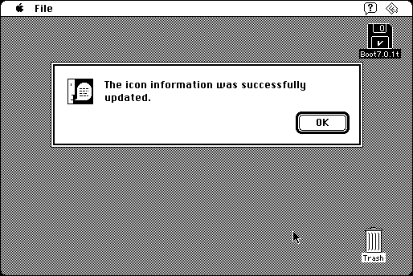

Download
FixIcons.zip (33K) Fix Icons Z-1.0d8 repackaged into a zipped hfs disk image and checksum file. The disk image can be mounted with Mini vMac.
FixIcons.hqx (41K) Fix Icons Z-1.0d8 in the original format.
copyright: Lawrence D’Oliveiro
mod date: Jun 12, 1997
license: freeware
from url :
LDO’s Software
A utility to fix some problems with the desktop database, without completely rebuilding it - “for example, when you get a new version which has new icons, but the Finder keeps displaying the old ones.”

If you find these downloads useful, please consider helping the Gryphel Project, which hosts them.
Here are the md5 checksums for the downloads, signed with Gryphel Key 5:
--------- GRY SIGNED TEXT --------- 112c97881a8e50db5e84bf8df8517c47 FixIcons.zip 21f296be2bb9a310b626ae507046b0f8 FixIcons.hqx ------- BEGIN GRY SIGNATURE ------- Gry/4Xa8CFcUzxdN/HAxRZW14BXfV+gJiNuAuI0G2dyWJVUbUgRPQCEUCqk4XGh5 ecgdEU8ifaSuvpNWkKcZqkjPoMc9vzZeuSVO6sTKSx8FJSTOKRO1x4ulGxFc+BjC cuu50bzQfRB1BO4cXz4Y6Oq4pwVv7dNCxiY/C94AsIn59uIiHhenwiLOJ1QejHdE -------- END GRY SIGNATURE --------